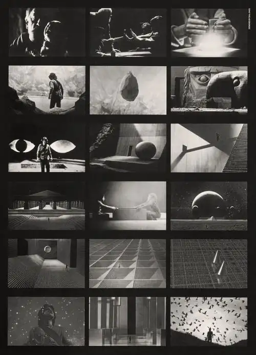
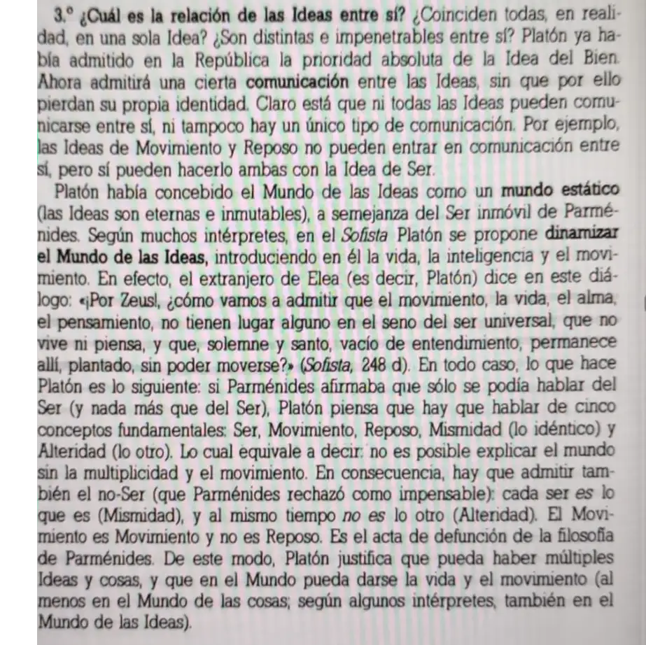

«Quest», Saul y Elaine Bass (1984)

Quest, de Saul y Elaine Bass es un cortometraje escrito por Ray Bradbury realizado con medios predigitales y una gran imaginación.
Ambientada en un mundo donde los seres humanos viven 8 días y buscan a un heraldo que les permita alcanzar la luz que les permita vivir «20.000 días» una cifra épica que equivale a unos discretos casi 55 años.
Las peripecias del protagonista equivalen al viaje iniciático y en ellas se combinan la arquitectura colosal, los paisajes oníricos (oscuros y amenazantes), los adversarios monstruosos y una sorprendente tecnología que reproduce una especie de videojuego en el que después penetra el protagonista.
La salida de la cavidad subterránea recuerda al mito platónico, pero con las inquietudes y sensibilidades contemporáneas: una puerta que conduce a un espacio natural bucólico donde al final se reflexiona sobre la vida y la fugacidad.
¿Cuál es el mejor momento de la vida? Cada día, cada hora, cada segundo. La epifanía de la fragilidad, de la finitud, contra aquellas longevas, por eternas, ideas platónicas, constituye un contraste interesante. La abstracción esencial frente a la floreciente naturaleza ofrece otra contraposición cuyo valor se incrementa conforme se destruye todo rastro de verdor en nuestro mundo.
En cualquier caso, merece un visionado.
P.D. Hoy me ha recordado un amigo (gracias Iván) que también Platón llegó a admitir el movimiento en el plano ideal:

La cuestión del Pensamiento en el «seno del ser universal» es un tema interesante en el caso de Spinoza, quien sostiene que Dios como tal (Natura naturans) no tiene Entendimiento o al menos no como el nuestro, desde luego. Comprender lo que en fondo es imposible: el mundo y nuestra propia existencia, ese es el afán íntimo de la filosofía.
Atribución de la imagen: https://es.pinterest.com/pin/1132655375058760859/, Recuperado de Estoica: https://es.pinterest.com/estoika_/
Atribución del texto: Un fragmento de Historia de la Filosofía en su marco cultural, César Tejedor Campomanes, SM, 1990, p.47.
Atribución del vídeo: https://www.youtube.com/watch?v=K212e9GluJU&t=37s Recuperado de
Sand on Titan: https://www.youtube.com/@SandonTitan-yx4wn.
Publicado originalmente en PortalEdu. Texto e imágenes conservados de la publicación original.